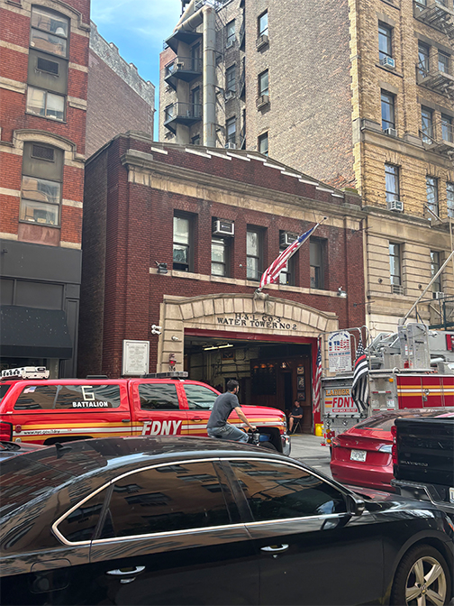

I continue past Third Avenue and another NYU building. People sit outside eating brunch while dog owners walk their pets. At the fire station, large trucks are parked outside, and a firefighter stands nearby talking casually with a small group of people.
Near Fourth Avenue, the sidewalks become more crowded. I pass the Hyatt Union Square, Regal, and The Travel Agency. I'm somewhat near the New School University Center, people move in every direction: a woman carries flowers, families walk together, couples pass by, and Uber Eats riders gather near the corner.
I know when to turn when I see the giant golden horse outside PF Chang’s
Continue Waklking